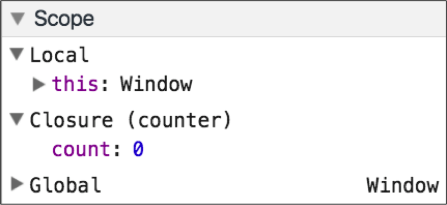
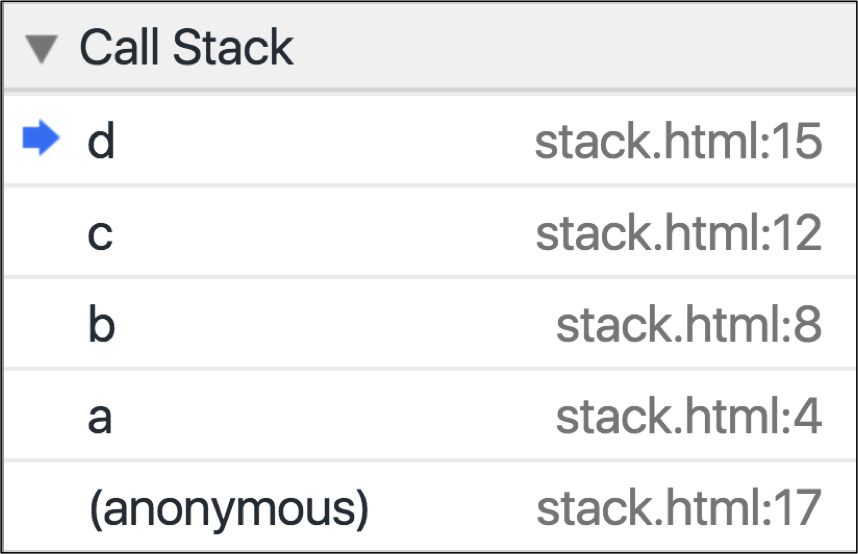

Debug JavaScript page
This course covers the basics of JavaScript debugging.
Before You Begin
 Click here to join
Click here to join
Bitovi's Slack Community
Join Bitovi's Slack Community to get help on Bitovi University courses or other Angular, React, CanJS and JavaScript problems.
Please ask questions related to JavaScript Debugging in the JS and DOM chat room.
If you find bugs in this training or have suggestions, create an issue or email contact@bitovi.com.
Overview
- Audience: Beginner and Intermediate JS developers.
- Goal: Teach basic debugging skills with Chrome developer tools.
- Time: About 45 minutes.
Outline
Scope - Learn how to see the variables available in the scope.

Call Stack - Learn how to trace how functions are called.

Prototypes - Learn how to explore an object's proto chain.
Conditional - Learn how to set a conditional breakpoint.
Property Changes - Learn how to debug property changes.
var propertyValue = object.property; Object.defineProperty(person,"property",{ get: function(){ return propertyValue; }, set: function(newValue){ debugger; propertyValue = newValue; } });